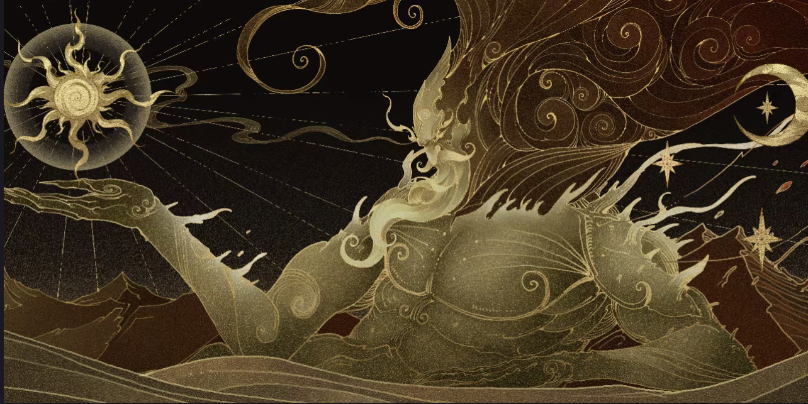
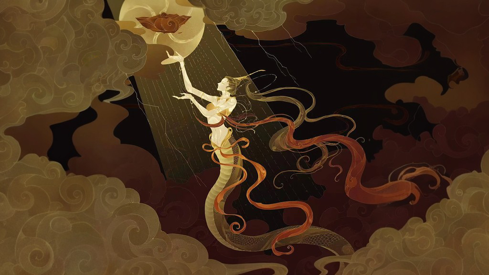

"The world was a chaotic mess before its creation, like an egg."
"was born in the midst of it, for 18,000 years
"One day, Pangu woke up.He swung his big ax and struck it violently into the darkness in front of home. Chaos gradually separated. Light parts slowly rose up and became the sky, the heavier part descended and became the ground."
His breath becomes the wind of the seasons and the fluttering cloud. The sound he made turned into a rumbling thunder. His sweat has become the rain that moistens all things.
In later ancient times, the earth collapsed and the world fell into great disaster for unknown reasons.
showed her empathy to people while seeing them be affected by the disaster, so she made up the sky with five colored stones, cut the foot of the god's turtle to support the four poles, flattened the flood, and removed the adverse qi through Yin and Yang, so that all souls could live in peace.
In Chinese mythology, Nuwa created people. She made dolls out of clay and gave them life.
 Sky
Sky Sun
Sun Moon
Moon